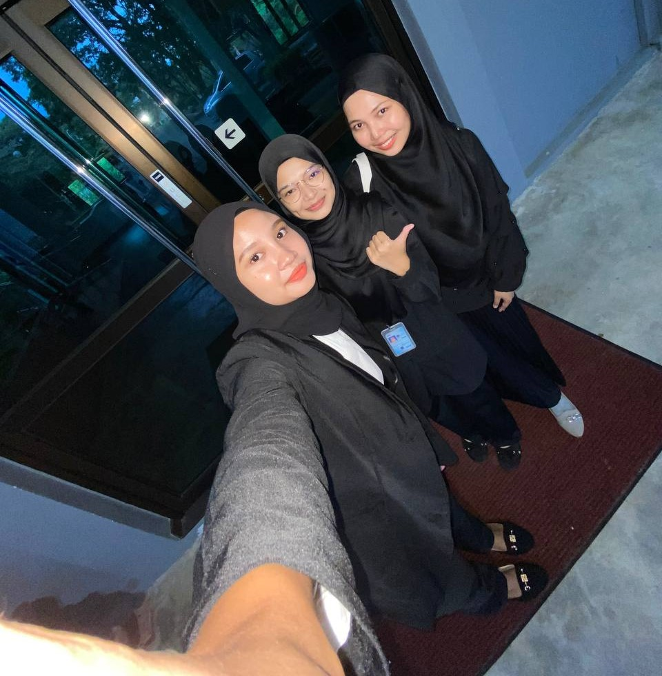

Experience
My Experience
MY EXPERIENCE
"'Some things cannot be taught; they must be experienced. You never learn the most valuable lessons in life until you go through your own journey.'"–Roy T. Bennett
UiTM Merbok |
 |
- When I continued to study at university, my new life started. When I get there alone, everything has to be done by my own without anyone's help compared when being at home. But I'm still feel grateful because I have a dream to achieve. The course I chose was very easy to understand, including friends and lecturers was very kind. Everyone is very friendly and loves to help people. This kind of environment makes me not feeling homesick. I was able to feel the experience of being in university for first semesters out of second semesters just after the covid-19 epidemic hit the country.
|
Online Distance Learning (ODL) |
|
- The outbreak of covid-19 disease has affected many people, including students who are still studying. Everything needs to be done carefully and keep the distance in order to avoid infectious diseases. I started learning from home and just getting information by online. Quite challenging for me as I had to work harder to continue my studies. It's a bit boring to study in one place and even the bill for internet data has increased. But I believe all this must have some wisdom.
|
Part-Time Job |
|
- The longer I am as student, the more fees and funds have to be paid to the institution. I have a lot of free time while studying from home. I use the time I have to earn my own income. From working as a sales assistant in a shopping center to as product seller, it’s all part -time work I’ve ever been through. It taught me a lot to be independent woman without expecting help from anyone. I also feel like I more mature because I learn a lot of new things.
|